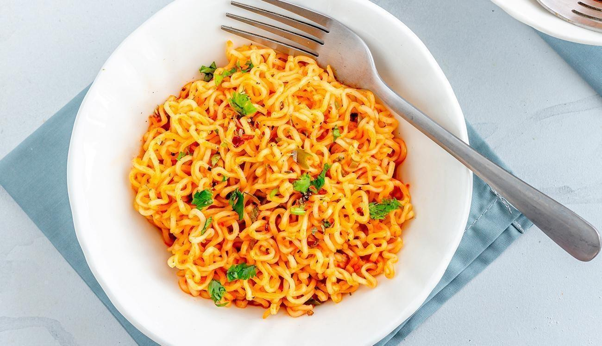

Miojo Turbinado

Receita dos Deuses, para momentos em que o orçamento e o tempo são curtos.
Ingredientes
- 1 pacote de miojo de sua preferência
- 1 Ovo
- 1/2 xícara de molho de tomate
Modo de Preparo
- Ferver 400 ml de água. Após Ferver adicionar o miojo.
- Adicionar o tempero do miojo, o molho de tomate e mexer bem.
- Adicionar o ovo e esperar em torno de 5 minutos, ou até que o ovo esteja cozido.